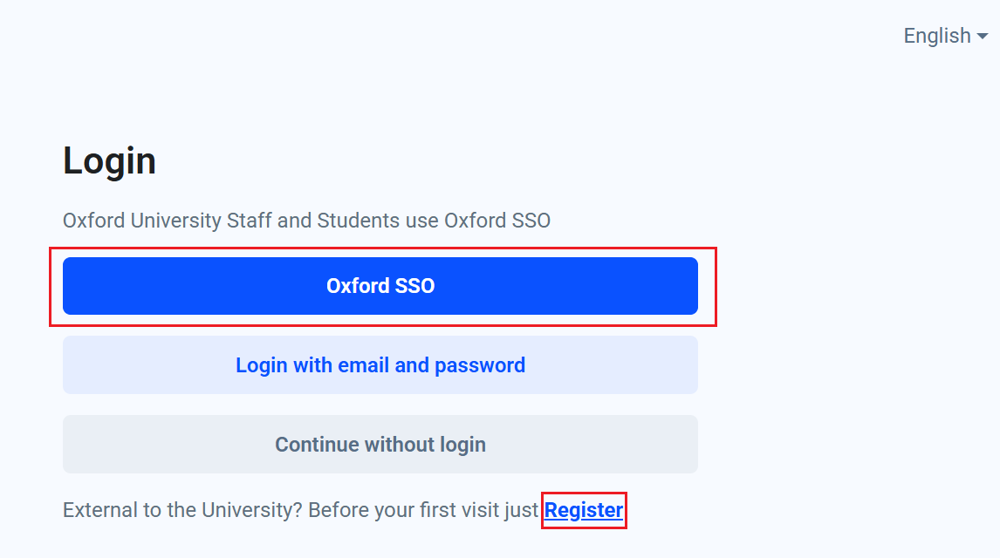
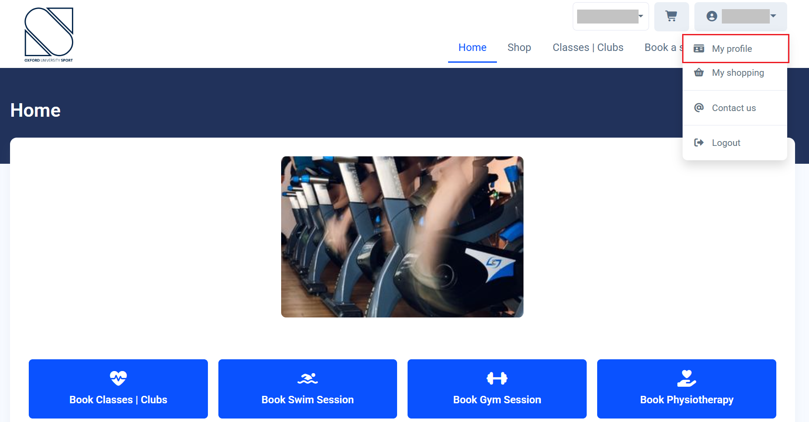
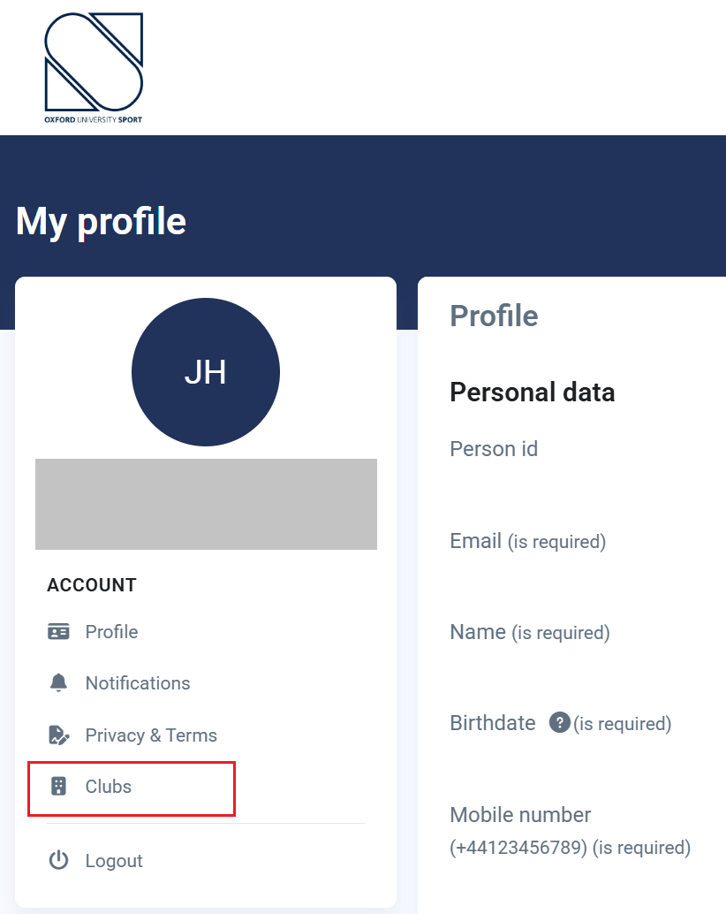
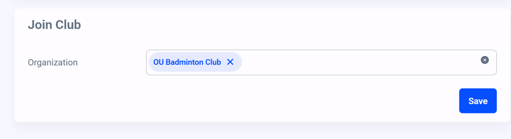
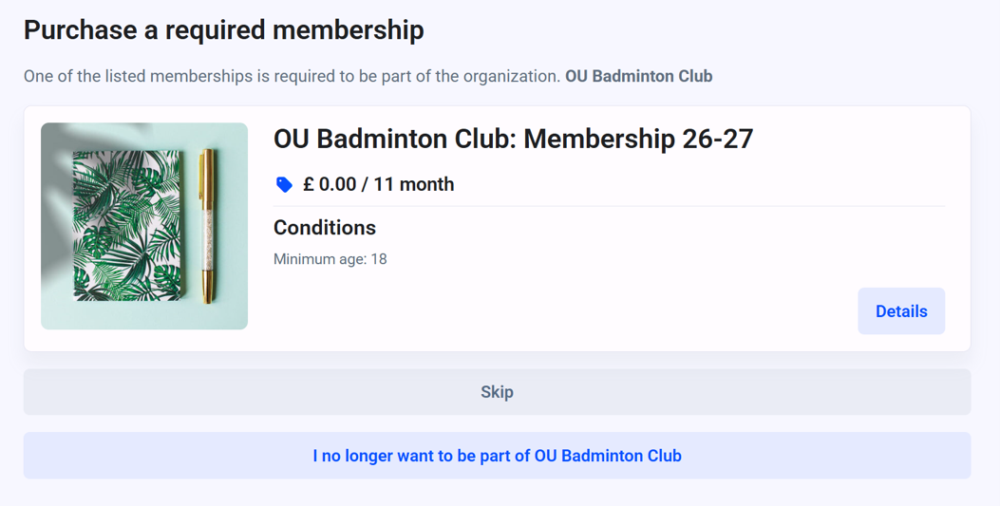
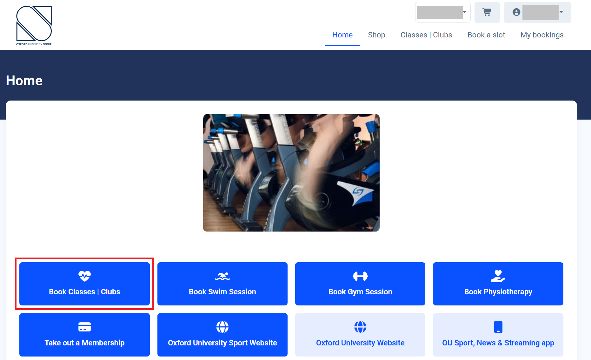
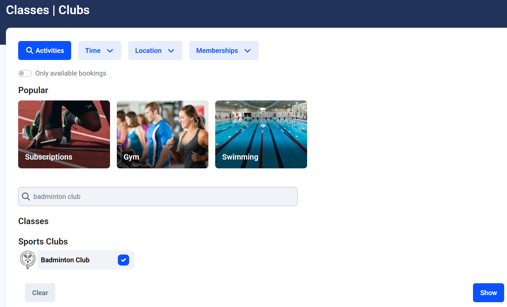
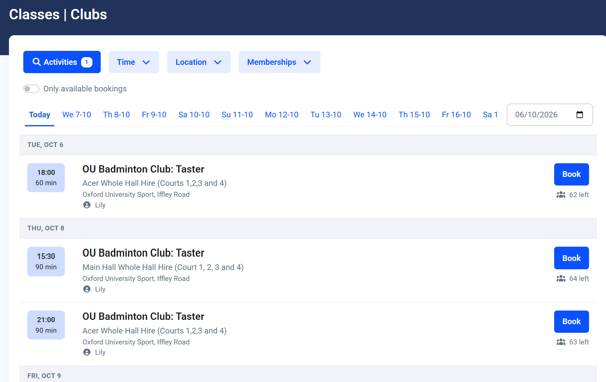

As of the 2026/27 academic year, Iffley Sports Centre has started using a new access system (in particular, students will no longer be able to use their Bod cards for access). This page provides a step-by-step guide on how any and all people interested in playing OUBaC-related badminton (squad sessions and/or clubnight sessions) can gain access.
Once logged in and registered, you can book onto sessions. Through the app, you will be able to enter Iffley Sports Centre for sessions you have booked onto.
Detailed Instructions: Login and Registering with the Club
Download the app or head to the OUS website using the links from above. For students, sign-up or login with your SSO (otherwise you won't get student/staff pricing). For external users, use the "Register" button instead.

Once logged in, click your name (top right corner) and go to "My Profile". You may be asked to fill out some additional personal information first.

Under the "Account" heading on the left navigation bar, choose "Clubs". On mobile, you will need to just scroll down to the "Clubs" section.

Under the "Join Club" heading, find the club you want to join and click "Save". You should see a pop-up message confirming your request to join the club, as well as receive a confirmation email. You will then need to wait for the club administrator to approve your request (the time it takes for this to happen depends on the club).

Once your request has been approved, you will receive an email asking you to log back in to "My Profile". When you log back in (or try navigating anywhere else on the platform), you will see a pop-up with a list of club membership options. Choose the option relevant to you, and click "Details". Validate the information, and then click "Add to Cart".

Confirm the order, and you should receive a confirmation email. Club membership and club privileges (such as booking access) will be live immediately.
Detailed Instructions: Booking Sessions
Once you have registered with the club, you will be able to book onto OUBaC-related sessions (squad and/or clubnight sessions). On the home page, click "Book Classes | Clubs".

Click "Activities" and use the search bar to find "Badminton Club" in "Sports Clubs". Select it and click "Show".

You should then see a list of sessions similar to below. Find the session you wish to attend, and click "Book". You should receive a confirmation email for your booking.

Accessing Iffley Road Sports Centre
When you arrive at the sports centre for your booked session, you will need to use the QR scanner in the OUS app. Scan the QR code at the gate, and if you have correctly booked onto a session, you should be able to get in.
Important: The gates won't open if you aren't booked on for a relevant session. The gates also won't open more than 15 minutes before the session.